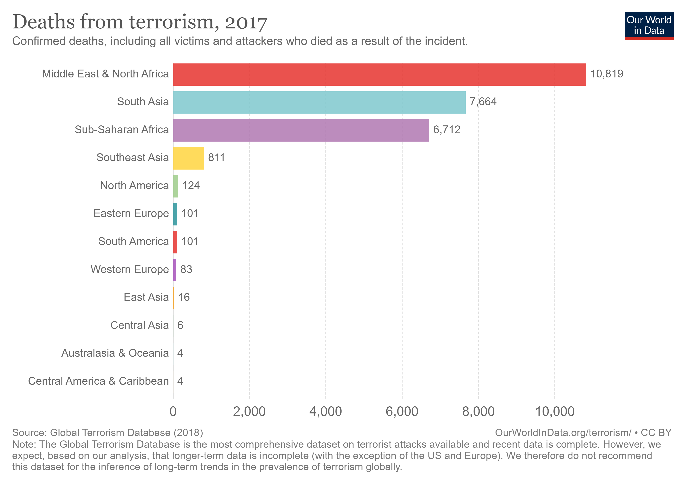

A global terrorism visualizer.
A global terrorism visualizer.
In our overview of terrorism, we try to understand how the number of terrorist acts varies around the world and how it has changed over time. To do this, we need a clear and consistent definition of what terrorism is, and how it’s different from any other form of violence. This is not straightforward.
Terrorism is defined in the Oxford Dictionary as “the unlawful use of violence and intimidation, especially against civilians, in the pursuit of political aims.” We quickly see that this definition is unspecific and subjective. The issue of subjectivity in this case means that there is no internationally recognised legal definition of terrorism. Despite considerable discussion, the formation of a comprehensive convention against international terrorism by the UN has always been impeded by the lack of consensus on a definition.
The key problem is that terrorism is difficult to distinguish from other forms of political violence and violent crime, such as state-based armed conflict, non-state conflict, one-sided violence, hate crime, and homicide. The lines between these different forms of violence are often blurry. Here, we take a look at standard criteria of what constitutes terrorism, as well as how it might be distinguished from other forms of violence.
TeVi is a flexible Web data visualizer regarding worldwide terrorism, based on our own REST API